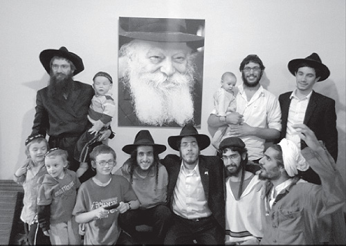

Military Exemption in a Cheese Shop
Stories of miracles and Divine Providence that were told by visitors to Chabad houses in the Far East

MILITARY EXEMPTION IN A CHEESE SHOP
Meir Naparstek relates:
A few weeks ago, we heard an interesting story. One of the people eating with us on Shabbos was a man of nearly seventy. This is the story he told:
About fifty years ago, I was attending an exclusive university in Paris. I loved it and was completely immersed in my studies. At the time, my goal was to become a doctor. Then one day, a draft notice came in the mail. I was 23. The law at the time was that every citizen of eligible age was drafted, regardless of their being a student. Of course, my medical studies were in jeopardy, because if I interrupted them for a long time I could permanently lose my standing. Since I had done three years already, this posed a big problem for me. My mother commiserated with me, but we couldn’t do anything about the situation.
A Lubavitcher Chassid lived near us. When he heard about my plight from my mother, he suggested that she ask the Lubavitcher Rebbe for a bracha. My mother is an innocent sort of person who doesn’t ask many questions. She brokenheartedly sat down to write a letter to the Rebbe. The Rebbe’s answer came as an utter shock. It said: “Regarding the offer of a job in a cheese shop, accept it and with joy and gladness of heart.”
My mother naturally could not understand the connection between a job in a cheese shop and my problem with the French army. She consulted with the Chassid who had referred her to the Rebbe. He told her that the Rebbe had meant it literally, that she should take a job in a cheese shop.
My mother took the Rebbe’s answer seriously, and visited many shops and cafes in search of a job. At one of these cafes, the owner said that he needed another employee and was happy to hire her. Her job was to slice cheese for customers.
Among the many customers who frequented the shop was an old, poor man. Every day he would visit the shop and talk to my mother. My mother would always give him a piece of cheese at her expense. This went on every day for a period of time.
When my draft date arrived, my mother was in a panic. She was so distraught that she did not pay attention to the people around her. The old man who had been used to her personal attention, suddenly encountered a glowering, tense woman. He left that day without his daily piece of cheese. The next day, the same thing happened and he left without a word. On the third day, he couldn’t restrain himself and he said, “Perhaps something happened that I can help you with?”
My mother told him it was a matter that had nothing to do with him and he surely could not help.
“Tell me anyway,” he pleaded.
My mother gave in and told him about my situation. When she finished, he smiled and asked her, “Do you know who I am?”
“No,” she said. “I don’t know you personally.”
“For half a year you gave me a piece of cheese and you don’t know who I am? I am the father of the chief of staff of the French army! Stop worrying. One conversation with my son will fix everything.”
And that’s what happened. Within a short time I was released from the army. I did well in my studies and became a doctor. We were all amazed by the Rebbe’s vision. We also got to see the Rebbe’s spiritual revolution in France, thanks to his tireless shluchim. Till this day, I owe a debt of gratitude to the Lubavitcher Rebbe.
MODERN-DAY AVRAHAM
Ariel Nagar relates:
In our shlichus in Vata Canal, India, we were mekarev someone in an unusual way. Unfortunately, this man was deep into klipa, but in one moment we were able to get him to drop it all. We took drastic measures, and boruch Hashem, it worked out well.
One day, we heard about a guy who had taken a vow of silence. According to what we were told, he ate an extremely powerful hallucinogenic mushroom and withdrew into himself, speaking to no one. Whoever tried talking to him found himself talking to the wall. The fellow did not utter a word. He had rented a place on a mountain, where he spent most of his time. He did not go out except to buy food.
One day, he decided to go out, apparently to buy the local beverage called chai. That day, the weather was nice and he was strolling about. The Israeli tourists who knew him from before were happy to see him. They convinced him to visit the Chabad house and inexplicably, he agreed.
He showed up and was open to listening to everything, except that which had a whiff of Judaism. We tried every way possible, but he remained closed off. We sat with him over a cup of coffee. Since he was a guitar teacher, a guitar was brought from somewhere and he began playing. At the end of the day, when we suggested that he put on t’fillin, he refused.
After supper and a Chassidic story, the shliach and I escorted him out. For some reason unknown to us, we kept walking with him. It was dark outside, rainy, and the roads were muddy. After we climbed the mountain for half an hour, we arrived at his home. When we walked in, I recoiled when I saw that the walls were covered with crosses and on the shelves were dozens of statues and impure images. There were also incense candles for idol worship. All this belonged to the owner from whom he had rented the place, although he definitely chose to leave them where they were.
In the meantime, the fellow went off to the kitchen to prepare chai. In the room was a large fireplace, and since it was cold outside, we had an excuse to light the oven. We pushed logs inside and as soon as the oven began to burn, we removed all the abominable items from the walls and shelves and tossed them into the fire. The items that were too large, we threw into the wadi. He was still busy preparing chai, and by the time he finished, there was nothing left of the klipos.
When he came into the living room, he immediately noticed the bare walls and shelves. We calmed him down by saying he shouldn’t worry, we would pay the landlord for all the damages. He was already under the “influence” somewhat, and so he wasn’t too worried about it.
We sat around the table and he urged us to drink with him. Since it contained milk, we didn’t touch it. When he wasn’t looking, we poured it into the fireplace. We continued farbrenging with him and then said Shma with him before we left. We thanked him for his hospitality and asked him to visit the Chabad house again. He promised to come early in the morning to wake us up.
We left for the Chabad house, feeling our way in the dark and the mud and somehow made it. We were filthy and had to take showers.
The next morning, as promised, he showed up. At 8:30 he knocked at the window. The first thing he said was, “I came to be a Jew for a day.” He immersed with us. The water was freezing and it was quite an effort to immerse. Then he went to daven. He insisted on davening every word from the morning brachos till the end of Shacharis. After Shacharis, he sat down to learn and to eat breakfast. He davened Mincha, and then Maariv, with great kavana. Throughout the day, he sat with us in the Chabad house. We discussed Jewish topics and he asked many questions. We all felt that he had had a personal exodus from that which had held him captive.
We hope he finds his way to Judaism and as the Rebbe said, “t’shuva was already done.” May we immediately see the hisgalus of the Rebbe MH”M.
Eliyahu Sebbag. "Military Exemption in a Cheese Shop." Beis Moshiach, no. 831 (April 27, 2012).